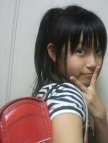

| 2012/05 30 Wed | ひめたん(* ゝω・*)ノ その156 |
 ひめたん主演、朗読の「乃木坂浪漫」を見たいよひめたんの浴衣か和服姿で、、、
ひめたん主演、朗読の「乃木坂浪漫」を見たいよひめたんの浴衣か和服姿で、、、
おまたせしました＼(^O^)／
昨日、乃木ろま撮ってきたのよー!
みなさんに見てもらえるの嬉しいですにやにや♪
詳しい事決まったらまたブログでお知らせるのーかーな。
昨日会社行きましたのー
プレゼント無事受け取りましたの(*^^*)
ありがとうございます!
いただいたプレゼントをひめきゅんさんだと思って、大事にすーるね♪♪
あーそれから
またアンケートありがとうございました(ω)
なんか、女の子寄りの男のこーとか、男の子にみせかけての女のこーとか
みんなかあいいね(//_//)
「俺は男であって、男の子じゃなーい」!って。
その通りよねー聞き方がわるかった。ごめんね('・・`)
今日の質問は単純明快に!
あなたの憧れの人は誰ですか?
 乙男(オトメン)な男子ってどう思いますか?^^
乙男(オトメン)な男子ってどう思いますか?^^
お料理できたり、お裁縫できたりするんー(^ω^)?
ひめたん不器用なけ、そゆ人がいないと生きてけなーいのっ
頼むよ乙男男子諸君!
嘘ですよろしくお願いします乙男男子さま

 ひめたんに質問、靴のサイズは?
ひめたんに質問、靴のサイズは?
スニーカーだったら24
ローファーだったら23.5
こんな感じかしらー♪
一応大学は名古屋を目指してるんだけど、
そしたら個別とか、行ける回数も増えるよね
大学受験、応援してくれますか?
大学受験応援する!
ひめたんも名古屋好きだし、いっぱいあえるようにもなりたいし。
名古屋で素敵な大学生活送れますように。無理しないで頑張ってね?
 大好きな友達とクラス離れたらどうする?
大好きな友達とクラス離れたらどうする?
大好きなんだから、会いに行く(*^^*)
でも自分からも積極的にクラス入っていけるようになればもう言うことなーい!
テストの結果教えてね!!
んにゃ(o>ω<o)
全部かえってきたら報告する...かもしれ...な...ごほっ
 ひめたんって大学まで行くつもりですか?
将来は、大学に進学するんでしょう?
ひめたんって大学まで行くつもりですか?
将来は、大学に進学するんでしょう?
 ちょい早いけど、ひめたん、大学行く予定?('ω`*)
ちょい早いけど、ひめたん、大学行く予定?('ω`*)
今は大学行くつもりでおりますよー!
ひめたんの学力でいけるんかな...これからかぁ。
 もしするとしたら、どういう学部学科に行くんかな?
もしするとしたら、どういう学部学科に行くんかな?
学部まで決めとらんけど、とりあえず文系にすすむー
計算とかより、お話読んだりするのが好きなの♪
学部ってどんなのがあるんですかねー調べてみよーっとう!
 同じ学校に兄弟が入ってきて、廊下とかで会うと気まずくないですか?
同じ学校に兄弟が入ってきて、廊下とかで会うと気まずくないですか?
気まづくはないけど、なんとなく会いたくなかった記憶がある(ω)わら
すぅが遠くから「おーいひめたーん!!!」って叫ばれて恥ずかしかったの思い出ねー
 ランドセル何色?
ランドセル何色?
おれーんじ!!!

ひめたんは、修学旅行はどこ行ったのカナ?
ひめたんは、どんなところに泊まったのカナ?
東京来たのー∩^ω^∩
ディズニーランドの近くのホテルに止まりましたよ!
 学校の先輩方と関わりある?
学校の先輩方と関わりある?
学校で見かける程度ではありますねー。
いつも気持ちのよい挨拶してくだいます♪
私的にはJKは怖い人が多そうだけどどう?
まったくまったくー!
みんなほんわかしてるし優しいし、ほんと居心地よいの(ω)♪
 学校の友達に何て呼ばれてるのかな?
学校の友達に何て呼ばれてるのかな?
ひめかーひめたーん
がメインかな(*^^*)
今後もちょこちょこ学食レポートしてくれる?
いえっさー
また食堂行って何か食べたらお知らせするねんっ!
 ひめかは青春感じることあるー???
ひめかは青春感じることあるー???
なーう(ω)!
ひめたんは毎日食堂で食べてるん?お弁当とかの日もあるん?
基本はお弁当持ってっとるんよー♪
気が向いたときは食堂に行ってきます(*^^*)
 高校で委員会とか入ってる?
高校で委員会とか入ってる?
んーん入っとらん('・・`;)
 勉強は得意なのかな?
勉強は得意なのかな?
得意じゃなーい。悩んでるのよー。
今度の期末はめっちゃ頑張って挽回してやんよ☆
えっ物理とかやってんだ!?さては頭いいな...?Ｆ=maとかやってんの?(笑)
Ｆ=ま!
何それーかっくいーい(*^^*)
一年生は物理必修なんよ。んでも苦手すぎて...
誰か教えてー!!!
(*´・ω・*)ひめたん
コメント(114)
2012/05/30 07:36